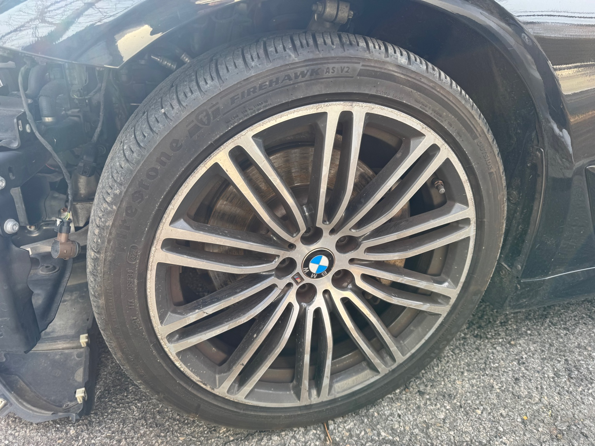

BMW G30
2018 BMW 530i Rebuild
Follow the 2018 BMW 530i from salvage rebuild through inspection, registration, detailing and final cosmetic work.
WATCH THE BUILD →BMW, Porsche and whatever project comes next — real repairs, rebuilds, upgrades and the problems that happen along the way.
Follow the 2018 BMW 530i from salvage rebuild through inspection, registration, detailing and final cosmetic work.
WATCH THE BUILD →
Repairs, upgrades, troubleshooting and real-world ownership of a Porsche 996 Carrera 4S.
WATCH PORSCHE VIDEOS →
Hands-on fixes, diagnostics, parts installs, detailing and practical automotive DIY.
WATCH HOW-TO VIDEOS →The 530i heads to salvage inspection on a flatbed with a check-engine light on. Then comes the rebuilt title, registration, professional detail and the payoff.
Watch Latest Video
Tools, parts, car-care products and gear that actually show up in the garage. Affiliate links and P&P merch can be added here as the channel grows.
Garage tools and equipment tested on real projects.
Useful parts, upgrades and project-car accessories.
Detailing and maintenance products worth recommending.
Projects & Problems apparel and garage gear.

Projects & Problems is about what really happens when you own, repair and rebuild cars yourself — including the mistakes, delays, surprises and wins.
The channel follows hands-on automotive DIY, project-car ownership, diagnostics, repairs, detailing and the decisions that come with keeping older and rebuilt cars on the road.